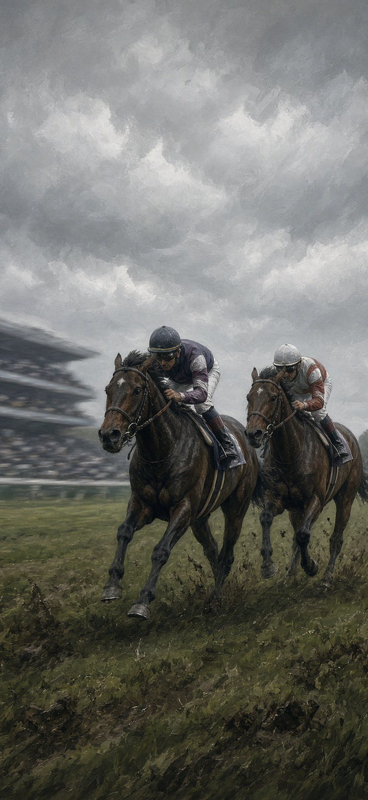

iPhone 15 Pro Max · 1290×2796
ネオ・ダービー壁紙を写真に保存
2003年日本ダービーに合わせ、天候は曇・芝は重（前日雨で当日はほぼ上がった状態）のオマージュです。土砂降り表現はやめています。
公式条件：天候・曇 / 芝・重
端末向け：iPhone 15 Pro Max ネイティブ解像度
保存先：写真アプリ（共有シート → 写真に追加）

この端末での手順
- 下の「静止画を写真に追加」を押す
- 共有シートで「写真に追加」
- 設定 → 壁紙 → 写真から選んでロック画面に設定
- 動きも欲しければ「動画を写真に追加」→写真に保存（標準iOSは動画を常時壁紙にしにくいので、まずは静止画推奨）
Safari推奨。共有シートが出たら「写真に追加」または「画像を保存」。うまくいかないときは下の直リンクから開いて長押し保存してください。